GALLIFREY
They That Walk in Shadows

TABLE OF CONTENTS
Click on paragraphs to see color coding for sources
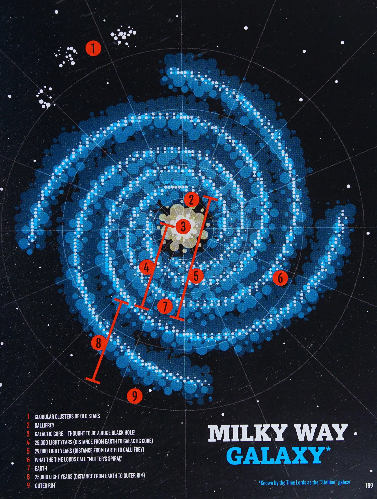
ASTROPHYSICAL LOCATION
Gallifrey's home galaxy is located within the Pisces-Cetus Supercluster Complex, in one of the Eight Domains. Gallifrey's binary coordinates are 10-0-11-0-0 by 02 from galactic 0 center. This also happens to be 'to the left' of the center of Universe (so relatively close to the Terminus Timestation). During the Rassilon Era, Gallifrey's Home Constellation of Kasterborous is 29,000 light years from Sol III (the Earth) in the Stellian (or Stellarian) Galaxy (aka the Milky Way, or Galaxia Kyklos). Gallifrey's is within a parsec or two of the center (or the edge) of this galaxy on the inner most point of Mutter's Spiral Arm, just beyond the Capricorn Tract. This would place the Kasterborous Sector in the Sagittarius Constellation (behind the center of the Galaxy) in the Earth skies (RA: 17h 45m 40.04s DEC: 29 degrees 00’ 28.1” ).War Time: The Nine Homeworlds Project
Ninety-five years before the beginning of the Time War the High Council approves House Lineacrux's Nine Homeworld Project. The Lineacrux cousins quietly arranged for the crypto-forming of eight new Gallifrey “Clones” out of existing Gallifreyan Colonies.The Project involves placing 8 planets into Inner Time and anchoring them to the Web of Time. At least one of the planets that were crypto-formed was inhabited by humans. Each of these cloneworlds was primed with the Laws of Time. The "clones" are to be used as bolt-holes, decoys, and alternative homeworlds because the original is less secure. This brings the total number of possible Gallifreys to nine.
Much of the following numbering is speculative, but this is a key to the various Gallifreys. For example, to differentiate the events on Romana's Gallifrey III, and the Master's Gallifrey VIII this timeline will (from this point onwards) refer to Romana's planet as "Gallifrey III" and the Master's planet as "the Homeworld." While there is no hard data, most Gallifreyans feel that the original Gallifrey fell during the first half of the Time War.
- Gallifrey I - The 'original' Gallifrey destroyed in the Battle of Mutter's Cluster at the beginning of Time War. (see The Infinity Doctors, The Apocalypse Element, the Gallifrey audios, and The Ancestor Cell)
- Gallifrey II - The Gallifrey where Flavia had a long and successful reign (see The Eight Doctors)
- Gallifrey III - The Gallifrey seen in the Big Finish 8th Doctor Adventures Audios (see Sisterhood of the Flame)
- Gallifrey IV - The Gallifrey devastated by the High Council to keep Varnax from seizing control of it. (see Last of the Time Lords)
- Gallifrey V - The Gallifrey destroyed by the Cybermen (see Real Time)
- Gallifrey VI - The One True Gallifrey which Rassilon later rules over (see The End of Time and Day of the Doctor)
- Gallifrey VII - The Gallifrey where the Doctor prevents the Elysian Faction from changing history (see The Final Chapter)
- Gallifrey VIII - The Gallifrey where the Master became War King (see The Book of the War and the Faction Paradox Audios)
- Gallifrey IX - The Gallifrey where the Celestial Preservation Agency (CPA) hire the actor Daland to play the Doctor in a museum (see Omega)
By presidential decree the cloneworld colonies are kept completely out of contact with each other and with the original Gallifrey Officially this was done to ensure that Time Lord society survived the War. However the project was shrouded in secrecy and it is rumored that the original Gallifrey might have been shifted to a new location leaving a cloneworld as a decoy in its place. Such a move could have had a large (but unknown) effect on the History of the Spiral Politic. Officially each cloneworld is occupied by caretaker-Houses but since communication and travel between them is forbidden each one believes itself to be the original Gallifrey and each has it's own Lord or Lady President. Each of the Clone Worlds think the other Gallifreys are merely Dominions of their Gallifrey.
The original Gallifrey was probably located, near the center of the galaxy, but by the year 2000 AD Gallifrey could be found 250,000,000 light-years away from the Earth in another galaxy. It could be seen with the Griffith Observatory's telescope on the Earth in the 1950s shortly before it was lost at the end of the Time War. One of the cloneworlds was put in the original's location, 29,000 light-years from Sol.Still other sources reported the Kasterborous constellation being located billions of light-years from the Earth, at the very edge of time and space.
About a decade after the Time War begins the Time Lord Braxiatel begins using the energy from KS-159 to prepare the planet Maximediras as a possible new Gallifrey. A century into the war, even more Gallifreys have been created secretly and placed in pocket universes as a last resort. This brings the total created to 12. It would appear that all but one of these Gallifreys was destroyed by the end of the Time War.
End of Time: Gallifrey Falls No More
After escaping from a pocket dimension the surviving Time Lords hide the final Gallifrey at the end of the Universe for its own protection. This Gallifrey is not a recent re-creation but one that fought in the Time War. Its possible that this homeworld is located at the same spatial co-ordinates as the original.
THE RASSILON ERA
According to "Christmas on a Rational Planet" Eye of Harmony was anchored around 3,500,000,000 BC. Once this happens, time begins moving at a different speed on Gallifrey then it does the rest of the Universe - around 5 times as fast to begin with. But the differential isn't constant, it is slowing by about 1 second every hour. The Doctor was born around March 30th, 1213 AD and when Greyjan had served one year as President of Gallifrey (and the Doctor was 753), the Earth date was 1752 AD.War Time: The Nine Homeworlds Project
Ninety-five years before the beginning of the Time War, House Lineacrux quietly arranged for the crypto-forming of eight new Gallifrey “Clones” out of existing Gallifreyan Colonies. The
Project involves placing 8 planets into Inner Time and anchoring them
to the Web of Time. Each of these cloneworlds was primed with the Laws
of Time.
The "clones" are to be used as bolt-holes, decoys,
and alternative homeworlds because the original is less secure.
This brings the total number of possible Gallifreys to nine.
As part of the defense mechanisms these other Gallifreys appear not be connected with the Protocols of Linearity (aka
the 3rd Law of Time). Indeed it is possible that a new Law of Time was passed to prevent each Gallifrey's causal nexus
from interacting directly with the others. This would mean that any enemy who engaged one of the cloneworlds who then
be trapped by the Protocols of Linearity making it very difficult for them to mount an attack on any other Gallifrey
(or their agents). Any Time Lord who survived their Gallifrey's destruction would only be able to visit worlds which
either had no connection with the War or worlds where it was believed that Gallifrey had fallen. Effectively they would
be stranded in the Post Time War era. This is exactly what we see in the 8th Doctor after The Ancestor Cell. Though
the 8th Doctor was able to get back into the Pre-Time War era, both after the events of Taking of Planet 5 and again
after the events of The Ancestor Cell, so we know it is possible.
These Gallifreys were also scattered through time. Given that these clone worlds are in different locations in space and time there is insufficient data to convert Time Lords dates to Gallifreyan Relative Time in Earth's BC/AD calendar. Some the starting points (ie when they were created and the Doctor was 1056 years old) appear to be as follows...
- The Gallifrey left at the original co-ordinates, was at 2059 AD at the time of the 9 Homeworlds Project.
- One Gallifrey could be seen with the Griffith Observatory's Telescope on 21st century Earth. The image depicts Gallifrey before the War started.
- Rassilon's One True Gallifrey is placed around ~9,000,000 AD
- Gallifrey VII was placed between 48,000 BC and 0 AD (Brax believes this Gallifrey is not the original)
- One Gallifrey might might have been placed in 3172 AD
- One Gallifrey might have been placed in 30,796 AD
- One Gallifrey is located at the very edge of time and space.
End of Time: Gallifrey Falls No More
After escaping from a pocket dimension, the surviving Time Lords hide the final Gallifrey at the end of the history of the Universe for its own protection. This location might have been chosen to assist the Time Lord in reaching the next Universe without the necessity of the Final Sanction.
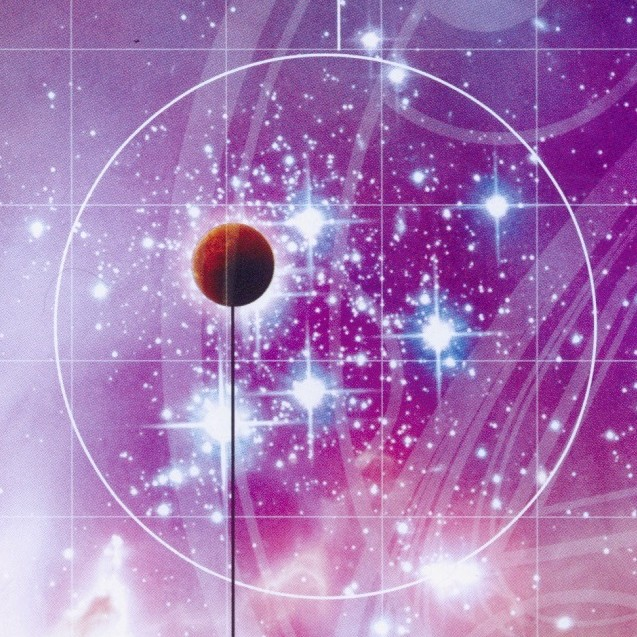
The center most star is Gallifrey's sun.
(This constellation is seen on the back of the 3rd/4th/8th Doctor's TARDIS key)
HOME CONSTELLATION
Gallifrey is in the seventh system
at the heart of the Home Constellation
(a Gallifreyan "constellation" refers to elements of time/relativity/location)
- which is known to the lesser species as the Minyan constellation of Kasterborous
(also
known as the Kasterborous Sector). It is named for an astrologist who
was the largest contributor to the New Astrology and personally wrote Our Destiny is in the Stars near the end of the 3rd millennium of the Minyan calendar. Later myths will claim that the gods yolked this astrologist to a chariot of silver
fire. His beliefs have infiltrated the cultures of the Delphons, Phreni, and Sirians.
There are a total of 17 stars in the constellation of Kasterborous.
Kasterboron Borealis was a cluster of stars in this sector as is the Kasterborous Ice Ring. The world of Levithia is one of the closest inhabited worlds to Gallifrey with a Type-G environment. Lavithia was center of the Levithian Empire which was allied with the Cyrrhenic Empire. It is possible that
Kastria (the homeworld of the silicon based time aware Kastrians)
and
Kastor Major (the homeworld of a totalitarian government)
are located in this sector.
The
planet Reave is in one of the systems in the Kasterborus sector. During
the Rassilon Era it was covered in purple trees. The Gallifreyans
avoided it because the praxis gasses in the atmosphere. But after its
massive fuel supplies were discovered it became a neutral service world
providing needed supplies to any passing space ship, regardless of
faction. It is also possible that
the
Kastron scientists from Mawdryn Undead
might have come from this sector.
The other systems of the Kasterborous sector have no significant populations.
One of the stars on the outer edge of the constellation is a red giant which contains the storm belt (filled with ruined
spaceships). Asomidium can be found in an asteroid belt in the Kasterborous Sector. This mineral was used to enhance Time Lord telepathy.
Gallifrey's Dominions include several planets that would be valuable if mined (Could they contain Taranium?). Trakkiney is a hot dry dusty world that was one of the Time Lord’s first off-world colonies (after the collapse of the Gallifreyan Empire). The green
ocean covered world of Cartago is another Gallifreyan colony. Cartago
is ruled by a Time Lord Governor from a domed city of the same name. Time Lord Way-Stations are located at various points in space and generally have several Time Lords assigned to them.
The center of most of the galaxy’s trade routes pass relatively near Gallifrey. This is where most of the more powerful civilizations in the cosmos can be found. Traffic Control has some of the best scanners in the entire galaxy and every ship passing through the Kasterborus Sector is carefully monitored. Traffic Control's temporal scans will detect an unscheduled Timeship about 2 minutes before it materializes and identify whether it is Gallifreyan from its molecular patina. Space vessel must request permission to pass through Gallifrey's space-time. It is forbidden to use black hole drives in the Seven Systems. This is because Black sun radiation drives most sapient beings murderously insane – though radiation has no affect on Gallifreyans. The Sisterhood of Karn draws in a significant number of space vessels (whose crew probably intend to steal the Elixir), and forces them to crash on Karn.
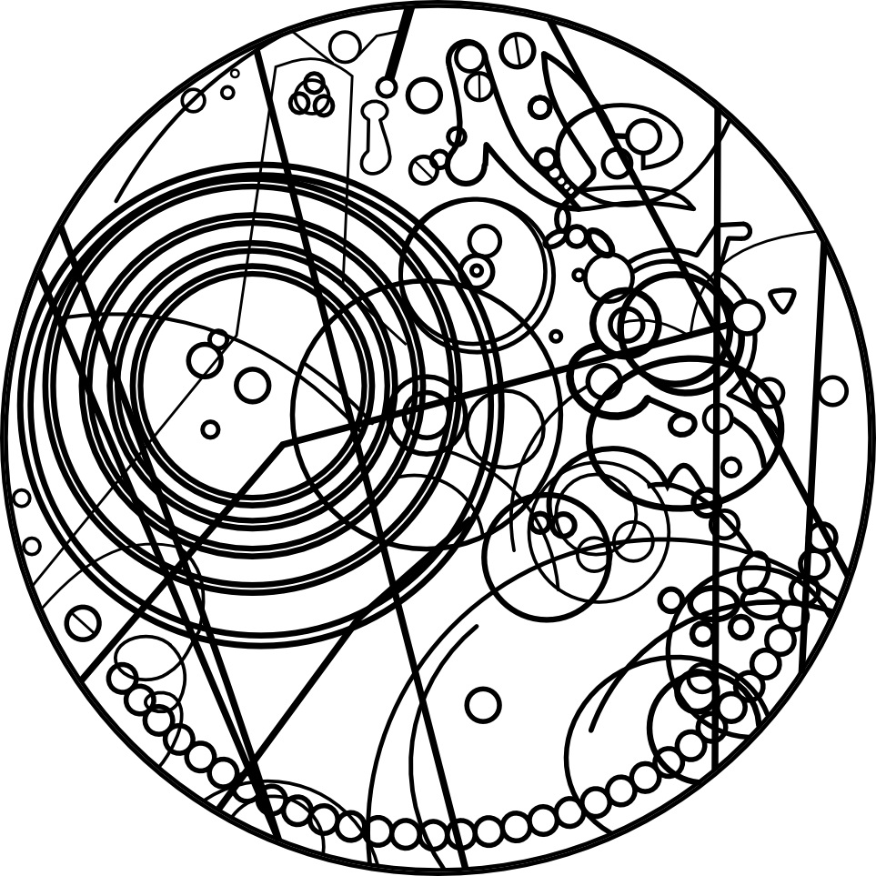
THE KASTERBOROUS SYSTEM
Gallifrey's primary star has no given name by its people,
but it is sometimes know
by the Minyans as the Kasterborous System,
and they designated its primary star as
Gamma Kasterborous A.
Like the Earth's sun, it is a main sequence Class
GV (yellow dwarf) star; though other sources claimed it was a large golden red star.
This discrepancy might have been caused when the
solar engineers
re-engineered the star to remain main sequence. This star ignited 4.6 billion years before life first came to the world of Gallifrey. From the surface, Gallifrey’s sun appears apricot colored when filtered through the transduction barrier.
The Gallifrey system has six planets (though some records don't count Kasterborous and state it has only 5 planets): Five of the planets are Gallifrey, Karn, Tersurus, the distant Polarfrey (a pearlescent gray frozen gas giant), Kasterborous the Fibster (an asteroid) and possibly Capetrious (a prison world during the Time War). Only the second and third planets of the system are considered to be important (almost certainly Gallifrey and Karn).
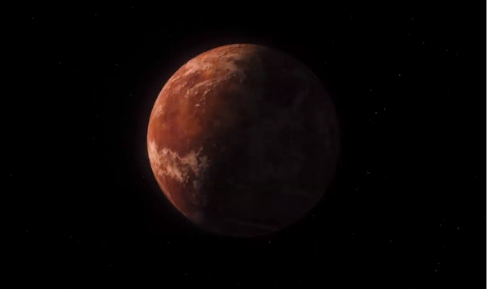
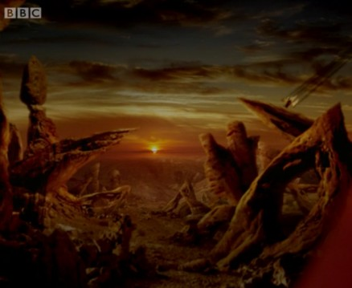
Karn
Karn is probably the second planet in the system, and is only a few billion miles (could be SI or European "billion") from Gallifrey. Karn has one moon. The planet is divided up into 7 provinces, one of which is called Seazalon. The Citadel of Karn now lies in ruins and is contaminated with atomic radiation. Those who remain in the cities have been mutated by the radiation, becoming Clawrantulars. In the modern era, Karn appears to have population of no more then a few million, who have mostly abandoned science and advanced technology.The Devil's Pass isn't far from the fire fountains, or the Eternal Gates. Much of Karn is cliffs, and hexagonal basalt-like rock stack formations. If Gallifrey had similarly rock formations, it could explain the importance of hexagons in their mythology. The Protectress is the largest mountain on Karn. Its peak is always covered in snow. Because of the tradition of scattering the ashes of the dead on the mountain, the peak strongly smells of the burnt bodies. Bogs are common and most parts of the planet experience almost continual electrical storms and rain fall. It’s common for many Gallifreyans to regard Karn as the rainiest place they've ever been.
Old Time: The Masters of Karn
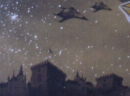
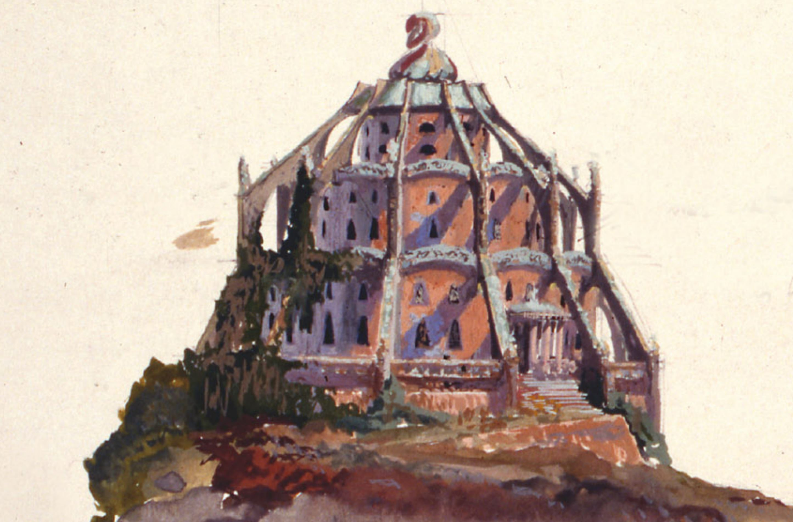
In ancient times the world might have been known as Winter. In the beginning, Karn had sparkling water and clear brilliant skies. When the galactic Gallifreyan Empire was at its height, spaning hundreds of worlds, there were stone castles scattered all over the world. But the most intelligent Karnians lived in metal walled Citadel of Karn. This was the scientific and technological center of the Empire. The Citadel was powered by Karn’s sun and was administered by a massive computer. This computer was charged with repairing the Citadel and itself, allowing it to potentially last forever. Its databanks held and protected all of the technological and scientific secrets of the Empire. The city made extensive use of force-fields to reinforce its metal walls but hidden maintenance tunnels can provide access to the inside. Like Gallifrey’s Capitol city there are extensive catacombs beneath the city.
The brilliant engineers, artificers, and scientists who work there held titles of King and Queens, and were known as the Masters of Karn. The Masters were ruled by the Grand Master of Karn. The Grand Master ruled from the Citadel’s Great Hall. If it was the will of the majority, the Grand Master of Karn could be dethroned. They construct many fantastic weapons and other machines. While the Masters of Karn were arrogant and over-confident, they weren't actually evil. The people of this world will live in peace and prosperity for thousands of years.
During the Time of Stones (sometimes known as the Age of the Masters), the Master of Karn known as Drextor had Slendor, design and build a massive 'Ultimate Weapon.' This weapon could change the nature of cosmic rays throughout the Universe so that they would drain energy from animal tissue. All of these animals will slowly sicken and weaken. A more leathal option was to use that collected energy to make the air itself burn. It could target anything in the galaxy and could be configured so that specified species are immune. The weapon was roughly the size of truck.
Selendor also mined a powerful ore from beneath the surface of Gallifrey (probably Taranium) to create the nearly indestructable Crystal of All-Power. The Crystal of All-Power was required to as a catalyst to boost the power of the Ultimate Weapon. When Drextor was crowned King he announced the completion of the Weapon. But it was not long after this that Drextor's own wife poisoned him to prevent the weapon's use.
The civil war on Karn leads to the use of
Slendor's Ultimate Weapon as the Empire collapsed. All of the cities were devastated, but the rest of the world remained habitable.
The majority of sea life survived, and over the years many mutated to take advantage of the predator-free lands. Some of the
Gallifreyan colonists survive but give up on science and live simple lives of farming and hunting far from the remains of the cities. After the fall of civilization on Karn the Giant Land Crab evolved.
The heavily mutated remaining Grand Master of Karn decided that the Crystal of All-Power was be split up into
the Seven diamond-like crystal
Keys to Doomsday. Once for each of the crimes of the people of
Gallifrey: Price, Injustice, Power, Exile, Knowledge, Wisdom, and
Nevermore. Not trusting the Time Lords, each key hidden in one of the Karn's seven provinces. The
Grand Master programmed the Citadel’s computer to destroy anyone who
sought the Crystal of All Power. For over a 1000 years the Citadel’s
computer restored, maintained, and protected the city and the last
Grand Master from all intruders.
According to a Gallifreyan fairy-tale, Swowana later persuaded Slendor to give her the 7th Key of Nevermore. She used the Key to make an impenetrable forcefield box. She trapped herself and the key inside the box to save Gallifrey.
Once on Karn, the sisterhood discovered the Elixir of Life that is produced by the Great Flame of Life. Reverend Great Mother Maren was already quite old when the Elixir is discovered. The Elixir is collected from the Fountain of Life. It is produced by rare volcanic numismaton gases, boiling underground streams, and the even rarer chemicals in the rocks of Karn's fire fountains. It takes centuries to fill a single vial of Elixir. It can heal almost any damage and allows a Gallifreyan precise control over their regenerations. Gallifreyans who drink it are rendered fertile again. Pure elixir can be used to temporarily resurrect a recently deceased Gallifreyan. Drinking it regularly will keep a person from aging and prolong their life indefinitely. After consuming the Elixir for long periods, it becomes impossible to die from a lack of food or water. It tastes like a cross between apricots and custard. The rain run-off from the mountain the sisterhood live on carries a contaminated mix of the elixir. It has been known to resurrect the recently deceased into a zombie like state. The Elixir eventually allows Sisterhood to surpass some areas of Time Lord science, most notably in the fields of biogenetics. Using the Elixir they can prepare potions that will tailor a Gallifreyan’s regeneration to enhance whatever trait is desired (including gender changes).
Their mental powers are dependent on their proximity to the Flame. But when close to the Sisterhood are among the most powerful mystics in the cosmos. Sisters will chant ‘Flame keep me warm. Flame keep me safe’ to protect themselves from great danger. They can teleport themselves over lightyears by chanting 'Sacred fire, sacred flame.' They can teleport other people or objects over a distance of only a few miles. The Visionaries are seers from the Sisterhood of Karn. Their clairvoyance allows them to view almost anything they wish across time and space.
Despite their powers, the sisters live a Spartan like in a manner similar to many of the human nuns of the Earth. Young girls in the sisterhood have the title Novice. A sister in the order must pass several Ascensions as they gain experience. A sister who has passed their first ascension can be trained to be an Apothecary. They carry herbs and creams that can heal wounds, such as the Elixir derived Sisterhood Salve (also marketed as Dr Solon's Special Morbius Lotion). Unlike the rest of the Gallifreyans, the Elixir allows the Sisterhood to reproduce naturally. But by the end of Brain of Morbius there will only be 70 members of the Sisterhood of Karn. Elder sisters can create dream-guards that are hung on the wall of sleeping quarters. The sisters have talismans that are supposed to protect them from misfortune. These are not to be shared with outsiders, but some of the sisterhood do sell beads and signs that they claim will protect those who carry them from misfortune. When one of the sisters did die (presumably from some sort of accident) their body would be burned in the sacred flame. Afterwards their ashes were gathered and then scattered on Mt Protectress. It is said that a sister always arrives at exactly the right moment, neither early, nor late.
Before the end of the Time of the Stones Rassilon signs the Pact (or Treaty) of Rassilon with the Reverend Mother of the Sisterhood. The Treaty states that the Time Lords will provide protection to the Sisterhood for as long as they share the Elixir of Life with Time Lords need it during certain rare cases of regenerative trauma. Thus the Elixir was used to save the lives of several Time Lords.
After his Renegade Presidency, Morbius and his army try to capture the world in the Battle of Karn. It took a week for the Eternal Gates to fall to Morbius’ forces. But once it did, the sisterhood was forced to retreate to the Devil’s Pass and were surrounded by Morbius’ forces. The treaty between Gallifrey and Karn required the Gallifreyan forces to come to the sisters’ rescue and the Cult of Morbius was finally defeated by the Alliance of the Sisterhood of the Flame and the Time Lords. Morbius becomes the first Time Lord to be executed by his own people. But Solon saved Morbius' brain from disintegration.
The Battle of Karn had devastated what was left of the Karnian civilization and the ecosystem of the planet. Before the war, Karn has sparkling water and clear brilliant skies, but afterwards they sky was always filled with gloomy clouds. It's possible that the planet had a much more plentiful ecosystem before the final battle of Morbius’ war. Most of the people living on Karn moved away. To protect themselves and the secret of the Elixir, the Sisterhood of the Flame begin using their powers to crash any ships that attempted to approach Karn.
The Daleks invaded Karn and acquired the seven Keys to Doomsday, and recreate the Ultimate Weapon created by Master Slendor. But an un-numbered incarnation of the Doctor, working as an agent of the Time Lords altered the seventh crystal causing the weapon to explode and destroy the Dalek and the remains of the Citadel of Karn.
The sisterhood was not only responsible for convincing the Doctor to finally engage in the Last Great Time War, but also helped him end it. After the loss of the Time Lords, the Sisterhood stayed in the shadows observing the cosmos and tried to ensure its safety. When they do decide to influence the events of the Spiral Politic such influence is subtle and often achieved through a word whispered in the right ear. The Sisterhood of the Sacred Flame is said to be tied to the Time Lords until the end of Time. The planet Sarn might later become known as Karn in the future.
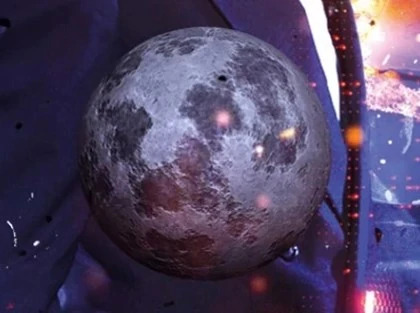
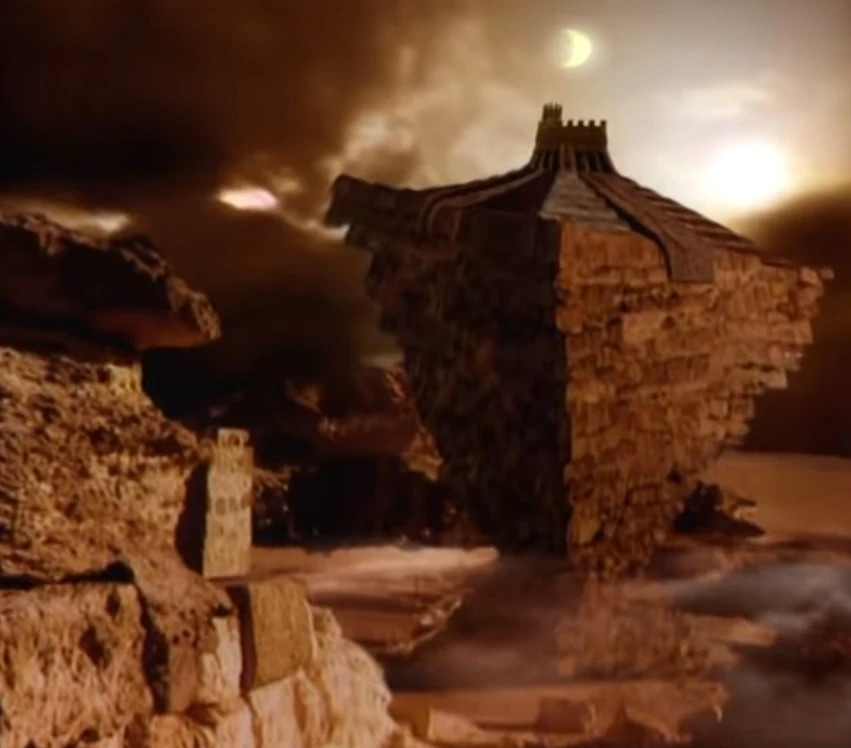
Tersurus
Old Time: Tersurrans
Once,
long ago, the planet was inhabited by a sapient species known as the
Tersurrans. They had huge, jutting, foreheads and scrunched up
tiny faces. They were covered in white hair with short, but powerful,
arms. Tersurrans had the ability to sense the health of the people they
touched. They preferred hot weather as cold weather tended to make them
ill. The Tersurrans had a kind and peace-loving culture and were considered to be one of the nicest species in the cosmos. During the time of the Gallifreyan Empire they were used as slaves of the Shobogans. They Tersurrans constructed the largest sewer systems in all of space, placed 500 miles beneath the surface of the world. One of the things the slaves likely built for the Empire were Rassilon Automaton (Raston) Warrior Robots to fight the Brood Vampires during the Eternal Wars.
Due to an attack by the Fendahl Predator, the very meaning of the Tersurran’s culture was devoured, leaving the people with only the most tenuous forms of communications. From that point forward they could communicate only by carefully controlled breaking of wind. The species was wiped out after they discovered fire.
The High Council of the Time Lords placed a top security base on Tersurus. Within this base are several levels of time-shielded vaults holding forbidden artifacts, technology, and designs information. Several Gallifreyans are stationed there at all times. It has a time-synchronous communications system that lets its crew talk to Gallifrey in real relative time.
Now Tersurus is surrounded with temporal defenses. The base itself exists inside a time bubble so that its impossible to detect from the outside. The crew has the ability to detect and identify incoming TARDISes and access to defenses that can kill the crew of the approaching ship (possibly by simply destroying the capsule) before it materializes. A transduction barrier is activated when a red alert is triggered. If the barrier is somehow penetrated, and the exact nature of the failure is known, a temporary retroactive update can be applied to transduction barrier security precautions to undo the breach from history. Such updates are supposed to be approved by the Lord President before being implemented. All of this probably has to happen within 27 minutes of the intrusion. The facility has proven to be vulnerable to properly used low-tech teleportation, and the Master has breached the vaults on multiple occasions.
By the 21st century AD/GRT the Raston Hardware Company was based on the moon of Tersurus Luna. The company claimed to have resurrected Rassilon’s ancient Automatons but the design was completely new with only a superficial copy of the originals. Starting in the 26th century, AD/GRT Tersurus became the location of the Tersurus Institute. Using funding from the Galactic Federation, the institute made several major breakthroughs in cloning science and technology. Their research continued until 6211 AD/GRT, when the Sontarans destroyed the entire world with a cyber-earthshock bomb.
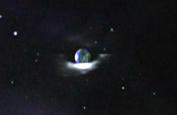
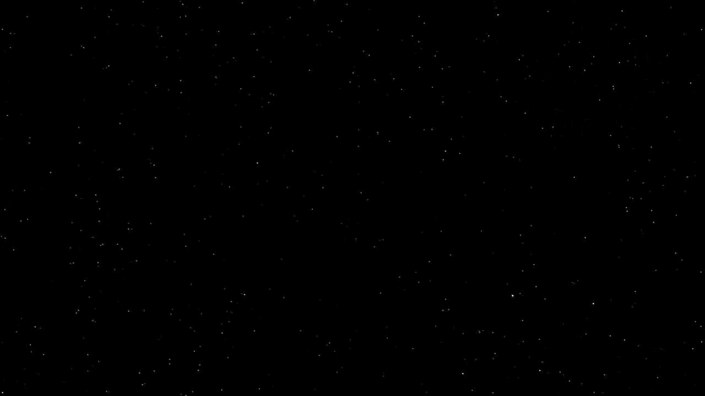
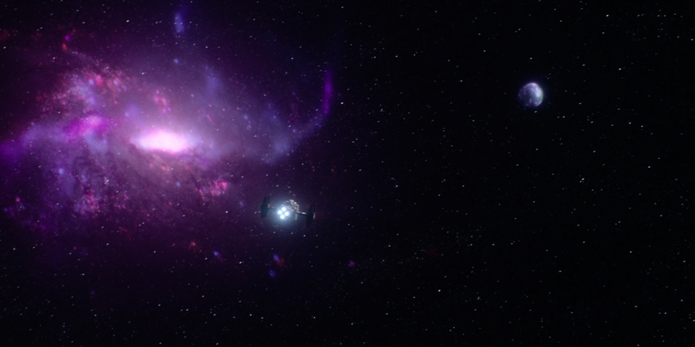
THE WORLD OF GALLIFREY
Gallifrey is the third planet from the primary star. The name Gallifrey translates as 'they that walk in the shadows' and refers to the Old Times, when the Pythia and her people existed in the shadows between the warm darkness of magick and the cold light of science. Gallifrey is known as the Shining World (or Jewel) of the Seven Systems. Depending on the season Gallifrey appears from space, to be a brown and green snow capped planet. Gallifrey's diameter is about 3 times that of Sol III (Earth). Despite this, the length of year, orbital radius, length of day, gravity, pressure, temperature, and oxygen levels on Gallifrey are the same as Earth.
Out of Time: Alzarius
Gallifrey has the exact same space-time coordinates as its 'mirror world' of Alzarius in the universe of Exo-Space. Gallifrey also appears to have the exact same diameter, day length, year length, and orbit as that world.
Alzarius is a lush world of forests, jungles, and marshs. Inside
caves across the world are pools of glowing blue water. The water in
the pools is filled with energized mineral from the world’s crust. This mineral is likely Zeiton ore, as it can cause sub-conscious driven mutations in subject in under a day. The
mineral gives the pools life enhancing properties. Within the water
points of bright light swirling, connecting, and detaching in a
hypnotic fashion. This water soaks through the soil and is absorbed by the vegetation, which is consumed by the animals.
The blue mineral water seems to vastly
accelerate ‘adaptation’ of all the life forms. So their DNA and
cellular biology is much more similar then you would expect. These genes allow all the organisms to make use of the minerals, and creates a fully integrated ecosystem. It
gives the species of this world the ability to adapt to new situations
and environments in a matter of hours, as well as very rapid
healing. The
native species find the pools to be soothing, and feel safe. The
caverns are known as the Heart of the World by the Marshmen.
Every 50 years, another near by planet, draws Alzarius away from it sun causing an event known as Mistfall. At this point ground-quakes would cause the planet's marshes would begin to emit a non-toxic mist like gas. The temperature would drop by several degrees, and the minerals in the pools are energized (probably because the geological shifts release more of it into the water table). The entire ecosystem of the world shifts. Aquatic sapient creatures known as Marshmen would emerge from the swamps and begin breathing oxygen.
Its quite possible that, before the environmental damage caused by the Anchoring, Gallifrey was very similar to Alzarius. If so, it almost certainly experiences a Mistfall like event ever 50 years.
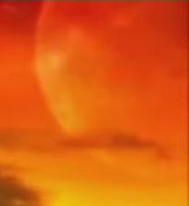
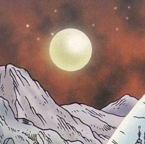
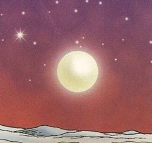
In the modern era, Gallifrey has two large moons (each probably about 6000 km in diameter). One of these moons (likely Pazithi) might even have a habitable atmosphere. One of the moons is called Pazithi Gallifreya which orbits Gallifrey every 27 days. The Moon is named after Pazithi the mystic virgin moon goddess. Depending on conditions, the moon appears to be copper colored and shines even in the sunlight. This moon has a large supply of Taranium and the moon was covered in mining colonies during the Dark Time. Flocks of Pazithi Bats (Pazithi Bats known for their poor eyesight) can be found there.
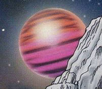
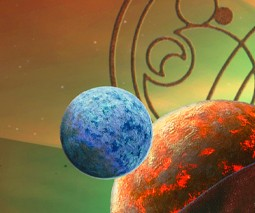
The other moon appears to be ivory or heliotrope colored. Because of their size, the moons exerts a much stronger tidal force on the planet then the Earth's moon does.
The smaller of Gallifrey’s two (remaining)
moon is tide locked. This moon holds the Recusary, which
functions as a retirement home and hospice for the Time Lords. The
Recusary is ancient, apparently dating back to the Time of Legend.
According to rumor, Time Lords have been walking into the Matrix via
the Recusary library since the first they first started storing their
minds in the Matrix.
Advanced technology (including TARDISes) are not allowed anywhere near
the Recusary.The walls and ceiling are made of wood and lit by candles.
The only
communication the Recusary has with Gallifrey is an exchange of
parchment every meta-cycle. This lack of technology is probably imposed so that the Recusary can function as a massive ‘zero-room.’
The singing of the time winds coming off of Gallifrey provides a sense
of peace to the Recusary. There is a meditation chamber with a
precipice that allows one to be directly exposed to Gallifrey’s time
winds. When so exposed, a Time Lord is forced to be completely
honest with one’s self and everyone else. The technique of Rassilon’s
Belt creates a non-technological electromagnetic forcefield that
prevents anyone from falling or being injured by the winds.
The library found in the Recusary is an adjunct to the Matrix that
exists on the outermost outskirts of the Matrix. Because of this, the
interior of the library is effectively infinite. While the Library
holds an infinite number of rooms, each room is finite. Most of
these rooms are arcades and galleries, but there are some sanctums
scattered throughout. These sanctums are well over 70 feet tall. Each
level of the library tower is torus shaped with the bookshelves
arranged in a radial pattern.
The Recusary is the second largest store of Time Lord information,
after the Matrix. It would take about 500 years to catalogue all
the books in just one of the infinite towers. The exterior of the
Recrusary, while finite, has continued to grow, even in the modern
era. By the time of the 4th Doctor, it has expanded to cover half
of the moon.
The Lord Provost oversees the Recusary. One of the earliest
Provosts, dating back to the time of Rassilon, was Lord Provost Tepesh,
who served as Prime Cardinal of the Arcalian Chapter before his
recusal. Not long after the events of The Planet of Spiders, a monk of the Eremite order took the name Ansillon and became the Lord Provost of
the Recusary.
The Chief Librarian answers to the Lord Provost. She oversees the
cataloging of all the books in the Recusary’s infinite library. For the
majority of the modern era the former CIA agent Elenore has
served as Chief Librarian.
The Cohorts are non-Time Lords who serve the staff and residence of the
Recusary. All Coharts are volunteer Gallifreyans, and all of them
undergo a program of behavioral modification. It is impossible for them
to be anything other than selflessly devoted to the Recusary.
They wear cowls and wooden face masks when on duty.
When a Time Lord is in their final body and retires they are recused to
the Recusary. Some of the retires at the Recusary have relatively young
bodies, but – because of their age – their memories are fading.
Because the minds (or souls) Time Lords are stored in the APC after death, Time
Lords don't fear death. During the years leading up to their final
chosen deathday, a former Time Lord will spend multiple hours of every
day meditating with their confession dial. As their death day
approaches a Gallifreyan will use a confession dial as part of a
purification ritual to face their demons. The dial is capable of
reading the Gallifreyan's mind and determining their greatest childehood fears. As
part of the shivery, the retired Time Lord would have to confront this
fear, and be pursue it until their confessions were complete.
All of this gives a dying Gallifreyan the opportunity to make peace
with the end of his life before being uploaded into the Matrix.
The meditations
are done in private meditation rooms known as shriving chambers. There
they contemplating the warp and weft of time - constructing a
confession mantra that will eventually make manifest their bridge to
death.
“Dark Times, Dark Times,
Let me face the inevitable with deep breaths
Let me face shame with the glow of dying star
Here we are, and here is a salutation to the Dark Times.”
- Traditional mantra
Once they reach Advanced Residency they focus all their time on this contemplation. The time leading up to the final death day is filled with meditation, repentance, acceptance, and contemplation of the absolute. This brings their mind to a state of peace before they join the memory gardens of the Matrix.
In addition to the isolated
shriving, there are communal events in the Recusary where everyone
meditates as the sun rises from behind Gallifrey. The offering of
confessions is done as the sun passes overhead.
A few days before a Time Lord finally passes of old age they will often develop a fine white filigree over their eyes. Once they have imprinted their last will and Testament on this dial the retired Time Lord seals the dial, and places it in their chambers.
Many Time Lords have massive
ceremonial funerals. But these matriculations are very formal and
quiet. These ceremonies always take place as the sun dips below the
coronal suture. In an-cient times red-healed boots were worn to
funerals. Flowers of Rememberance are showered on all the attendees
during the cermony.
Time Lords, are expected to face their final deathday with dignity. They walk into the Recusary’s library with a Cohort and a candle. The Cohort walks with them until the candle burns out, at which point the Cohort returns to the occupied parts of the Recusary while the retired Time Lord continues deeper and deeper into the unused parts of the library. Eventually they physically pass into the Matrix itself.
dark and tall at the edge of the wood.
'The sky’s too big, I’m scared!' I cried.
She replied, 'Young man,
don’t you know there’s more to life
than a moon and a president’s wife.'”
Gallifrey’s lost moon of Botoya was the subject of a parable in the Book of Rassilon. It says that Botoya the Sublime holds a Time Lord machine whose technology surpasses that of the modern Time Lords. Botoya was ‘plucked from the night’s sky and sent who knows where.’ Some Time Lords and Time-tots sing songs about the stolen moon of Botoya and how it was taken along with the Lord President's wife by a renegade Time Lord. In the modern era most feel that the story of Botoya is thought to be a symbolic metaphor designed to teach Gallifreyan’s a lesson.
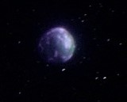
Old Time: The Lost Moon of Botoya
During the Old Times, Gallifrey’s moon, Botoya the Sublime, was converted into the Cosmic Restorator. It was designed to undo the errors of the past. Its implied that the Restorator can only affect things in its own relative past. The whole moon is an essential part of the device (almost certainly because of the massive amounts of obsidian other minerals).
When first powered up the Restorator creates a maelstrom of dark energy above a large obsidian deposit. The moon requires four Time Lords working together to control and focus the dark energies. These energies can unravel space-time itself. Once these energies are generated they must be focused on some target or the temporal reflux will build and build until it compromises the entire space time vortex. The Restorator has safety brakers, and generators and continuum flux disruptors. Botoya has a chamber carved into the obsidian which has Old High Gallifreyan inscribed on its walls.
For full and safe control of all systems, crystalline chrono-core needed to be plugged into a control plinth. This core could be split into 3 parts. When assembled it allows its space-time chart to function as a portal through time and space to access the Restorator at a point in time before it was self-destructed. The crystal is booby-trapped with a three-part disintegration field generator.
The moon was lost during the Old Time before the Book of Rassilon was written. Fleeing Gallifrey with his grandaughter Susan,the Doctor took and lost Gallifrey's moon (along with the Lord President's daughter). The Doctor later speculated that this was done to hide the moon because it was too powerful. The moon ended up becoming known as the asteroid Primeline 275, orbiting the dark side of a dead planet, in the territory of the Death Lords of Ketha. Eventually it was, being found again and destroyed by several incarnations of the Doctor.
The planets Karn, Tersurus, and Polarfrey can be seen at night with the naked eyes. Depending on conditions, the moon Pazithi Gallifreya appears to be copper colored, while the other moon appears to be ivory or heliotrope colored. In addition, several artificial satellites can be seen from the surface, even in daylight. These satellites include a Remote Matrix Station equipped with giant beam weapons. These satellites, combined various spaceships, and time ships can sometimes fill the evening sky with purple, green, and yellow lights.
In the pre-Rassilite era, Gallifrey’s sky was cerulean blue in the daytime. But, due to the transduction barrier, the sky is burnt orange at night and pearlescent orange in the day. This burnt orange sky is famous among the time aware worlds.
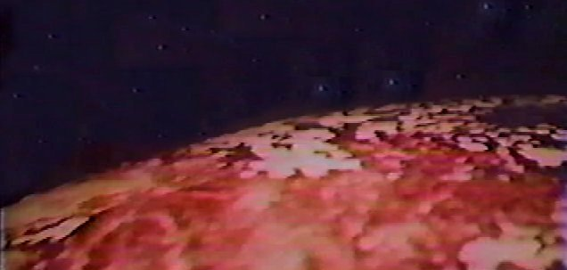
Because it located in Inner Time, Gallifrey (or maybe just the Death Zone) shows up as no time and no place on TARDIS instruments. Despite the fact that Gallifrey has been primed to resist the effects of entropy, the planet is very old and appears quite ancient. From orbit Gallifrey is the color of rust, with brown lakes and dust-gray clouds. There are three small oceans (which were once quite large) and several seas but less then half its surface is water covered. There are lighthouses along the coasts. Many of the lakes are gold colored (reflecting light from the burnt orange sky?) Originally the sky was cerulean blue in the daytime. But, due to the transduction barrier, the sky is burnt orange at night and pearlescent orange in the day. The burnt orange sky of Gallifrey famous among the time aware worlds. In addition the sky is often filled with filled with purple, green, and yellow lights. Violet clouds can be found at the upper most levels of the atmosphere. Under certain circumstances the sky will also appear blue. In the summer, Gallifrey's sun is still intense enough to cause sunburn on a human.
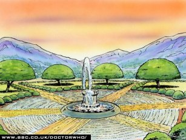
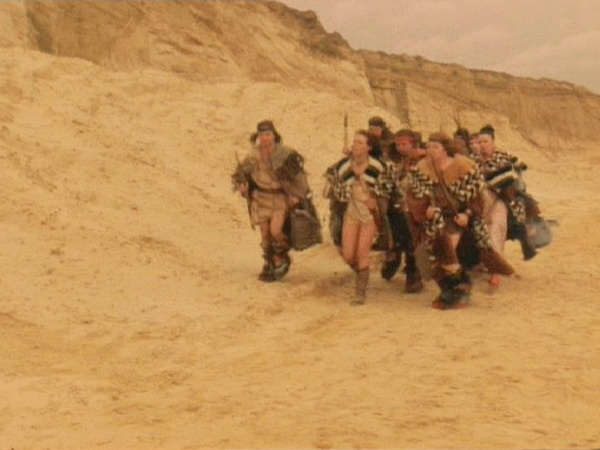
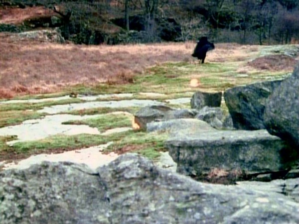
Though most Gallifreyans never venture outside
the Gallifreyans do make extensive use of weather control. Day 1 of the Gallifreyan New Year probably corresponds to their winter solstice. Because of the motions of its two suns, Gallifrey technically has more then 24 seasons, but the effect of the suns tend to cancel each other out, so that
most areas of the planet resemble the conditions and dryness of Earth's
Serengeti throughout the year. For this reason many claim Gallifrey has
no seasons at all. One of these 24 seasons is called Haytime.
The Autumn breezes would blow through the silver leafed trees, creating a musical effect. At
one point the planet might have been very much like Alzarius from
E-Space and possibly had a cooling Mistfall every 50 years caused by
another planet (almost certainly Karn) pulling Gallifrey farther from
its sun. This could explain why Karn is sometimes known as Winter. Despite the use of weather control technology, the
planet is currently in the midst of an ice age, and the rivers around
the Capitol freeze every winter. The billion year ice age that grips
Gallifrey has caused much of the water on the planet to become trapped in (relatively) small, but very thick, polar ice-caps. There is
little water and no argon in the atmosphere. Despite this, one side of the planet is known as 'the foggy side.' Cloud color ranges from dust-gray to violet. Lightning is rare on Gallifrey.
Active volcanoes appear to have been common on pre-historic Gallifrey. Most of Gallifrey is covered in burnt red
rocky deserts (with orange and red sand) and
near endless mountain ranges. Brown, purple and gold are other common rock colors.
The water of Gallifrey's streams often tastes slightly sweet, but many of the river beds are dry.
There are some green forests, and golden fields strewn with rubble - but they make up a minority of the terrain.
Gallifrey's surface is divided up into sectors including Prydonia, Capari, Anarcos, Barnakadon (with its Valley of the Shadow), and the Province of Arbesk. The Prydonia Sector and its city of Prydos is located less then 400 miles to the south of the Capitol. Lake Abydos might be near House Heartshaven (or Dvora). Lake Calasper has a town on its shores. Other mountains include Mount Callisto and Mount Serenity. Before the Time War there are only between 3 and 9 million Gallifreyans, most of which live in city-complexes other than the Capitol. This leaves many ancient settlements and roads completely abandoned. The undeveloped areas of Gallifrey are known as the Wild-Lands.
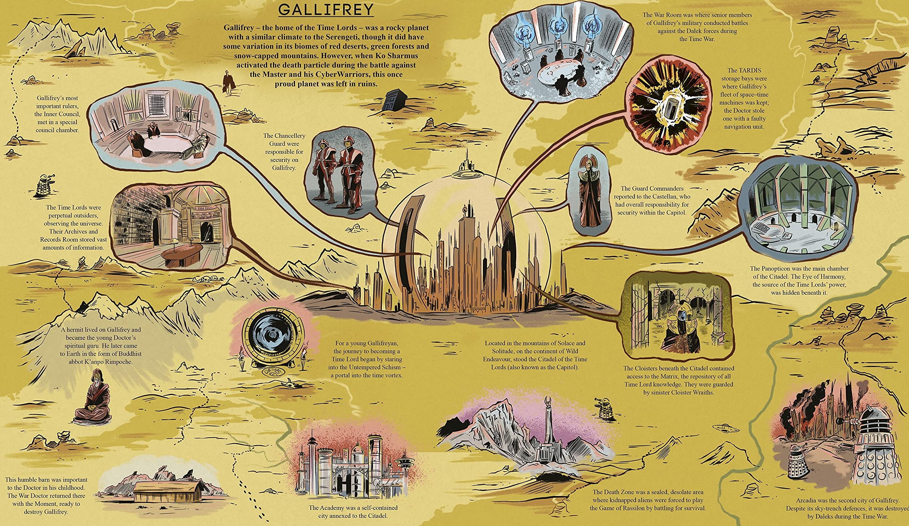 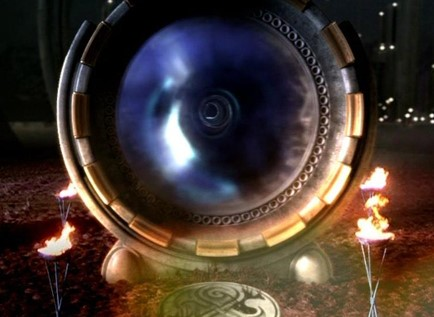 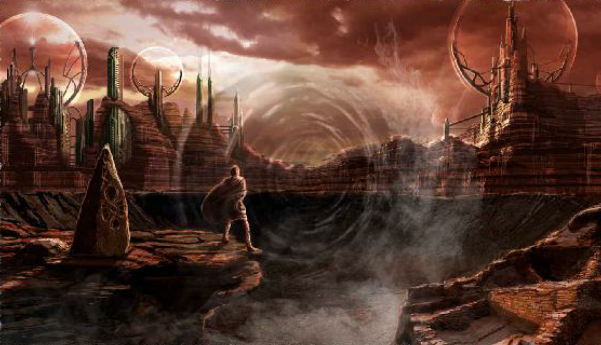
The valley between those mountains was known as the marshlands in the Old Time and had explosive swamp gas. But the ice age has given it the moniker of the Drylands by the outlanders who live there. The Untempered Schism is found just outside the south-west edge of the Capitol. Another schism, the Crevasse of Memories That Will Be, is located outside the Capitol. During the Dark Times the Capitol often suffers from a bitter wind from the Northern Lakes located at least 200 miles north of the Capitol (if not more).
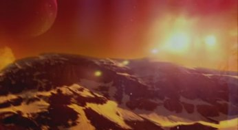
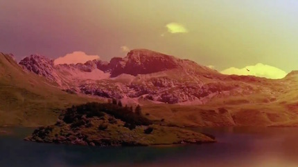
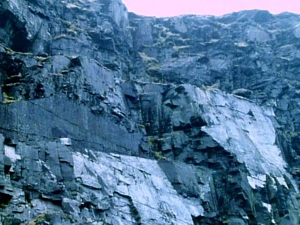
The Capitol isn't too far from the red grass covered hillsides of Mount Perdition. The Master's Chapterhouse of Oakdown can be found on its slopes. Perdition is probably less then a two day's walk from Mount Solace (so less then 20 miles) and is part of the same mountain range. This range stretches over a thousand miles to the south-west from the Capitol and probably encompasses Mount Cadon. These are known as the Foothold Mountains. The areas around Mount Perdition were once filled with fruit and wild game. The Sea of Life lies near the base of Mount Perdition. Its shore is made up of orange sand. The water of the Sea of Life is silver (or maybe just often appears silver). There are caves in the mountain, and legend says that it was here that Death first came to Gallifrey. Legend also says that a being known as the Stranger reshaped a tributary of time that flowed down the mountain into the River of Time and the Sea of Life. By the time of the Time War the CIA had a base on the mountain.
A massive canyon can be found about 800 miles to the north-east of the Capitol. The Fettarian pass offers a way through the mountain range and allows access to the west coast of Wild Endeavor. A train route leads from the Capitol through this pass. The Soonwell Valley is located in the pasture belt valleys about 500 leagues (~2000 miles) from the Capitol. The Camation Desert is located thousands of miles from the Capitol.
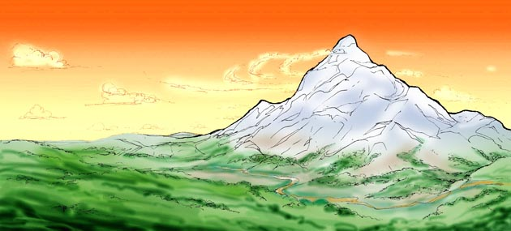
Most of the mountain ranges on Gallifrey are quite tall. The planet's highest mountain is Mount Cadon, which reaches to the fringes of Gallifrey's atmosphere (beyond even the transduction barriers). The mountain is found in the southern half of the continent
of Wild Endeavor, but within sight of the Capitol (so both are near the equator). It is near the Lune Forest and the inland sea. The
mountain has had many names over the eons, some of which are still
used. The cousins of the House of Lungbarrow generally referred to it
by (its pre-Rassilon) name of Mount Lung. The Legends of the Unhappened
Days designated it as Mount Plutarch. Others called it Mount Rycadia. It was said that the name one used changed one's experiences when climbing the mountain. This gray-green mountain holds the founding exo house of Lungbarrow about half-way up. In the months leading up to haytime stiff tall (red?) grass dominates these slopes. Other times of the year they are covered in lizard-eating little blue flowers or grey snow. Presumably Cadonwood Trees can be found on Mount Cadon. The
snow is known to be hallucinogenic, giving Gallifreyans visions of
their past or future, with the effect becoming stronger the closer one
got to the peak (which is always snow capped). The mountain air
carried the scent of tristort and weanskrike. Cobblemice, beatitude
flies, owls, and tafelshrews can all be found living on the slopes of
Mount Lung. The Sisterhood told tales of dangerous and powerful Boojums (eight-foot gray hair covered humanoids with a bare Shobogan-like face) living on Mount Lung. But many Neo-Rationalist don’t believe them. The base of the mountain slopes gently into an aired plane that covers the 400 miles to the south of the Capitol. The 28 square kilometer Prydonian Academy of Time is found at the northern base. Its students are forbidden from climbing the mountain. The
River Lethe was located within walking distance of Mount Cadon as is the river Cadonflood. Both are probably located to the west of the Prydonian Academy. As its name implies, Cadonflood is know to flood from time to time.
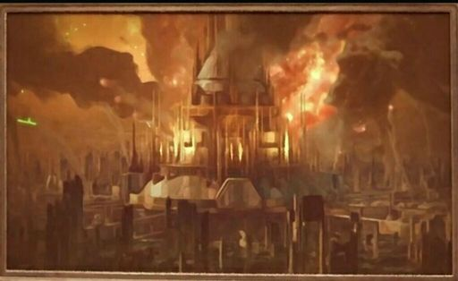
Southern Gallifrey
is considered quite wild and beautiful,
appears to be regarded as something of a vacation area. It should be noted that the term ‘Southern Gallifrey,’
generally refers to areas close to the equator of the planet, which are
in the south part of Gallifrey’s primary continent of Wild Endeavor.
This tends to be where the lushest and warmest parts of Gallifrey are found. Many part of Southern Gallifrey
filled with arid planes. While there are occasionally blizzards in the mountains, the plains often experiences warm nights where the stars shine brilliantly.
The Lakes of Iridescense lie among Gallifrey’s more pleasent lands and
villa’s in this area are considered to be desirable. Some of the
more adventurous younger Gallifreyans can be found sailing these
lakes.

What land there is in the actual southern hemisphere (sometimes known as the foggy side) is filled with mountains
and known from its stormy wintery climate. The
mountains of south are located thousands of miles from the
Capitol, and are know to be inhabited with stray cats and hermits.
There is a large desert near these mountains (possibly the Camation Desert?). The Gin-Seng Sector covers some of the southern mountain near House Ixion (the southernmost chapterhouse). The feral so-called Killer Cats lived in the Gin-Seng Sector. These precognitive cat people despised the traditions of the Time Lords, and had their own mercenaries and oracles.

Gallifrey Geology
-
Arcadian White-Point Star Diamonds
-
The Arcadian Sector of Gallifrey is the only place in the cosmos where one can find white-point star diamonds. These Arcadian Diamonds the most expensive substance in the Galaxy. White
Star diamonds are one of the strongest stones in the cosmos and can
even survive inside the vortex or entering a time lock. They have a
complex cellular structure that allows them to be programmed like a
circuit board to resonate with a specific person's biodata. Once
inside the Vortex a properly programed diamond will be drawn towards
its target. Since they can be tracked through time and space, they can
be used as a beacon to pull things out of even the strongest of time
locks.
-
Artronic Crystals
-
Gallifrey
and the world of Mirelle are the only places one can find artronic
crystals. These crystals are plentiful on Gallifrey, especially on the
slopes of Mount Callisto. With proper sonic vibrations, an artronic
crystal can create fractures in time and space. They can be used to
generate time bubbles with dialated time and space inside them.
-
Gallifreyan Zinc
-
The planet also has a significant amount of Gallifreyan Zinc which is one of the strongest metals in the universe.
-
Gold
-
Gold has no special value on Gallifrey
(indicating it is quite common?)
-
Kyfred Gems
-
Kyfred
Gems are another time-sensitive crystal found only on Gallifrey. Some
Time Lords have claimed that they are the rarest gems in the Universe,
and make excellent bartering items across the spiral politic. When
released in the Vortex the crystals can refocus and restabilize any
temporal energy they come across.
-
Madranite
-
Madranite (which can be used to create psionic inhibitors) is fairly common as well.
-
Zeiton
-
The area of Gallifrey known as Mansippia once had massive amounts of Zeiton ore. This Zeiton ore probably significantly accelerated evolution on the world by re-shaping the inhabitants morphic fields.
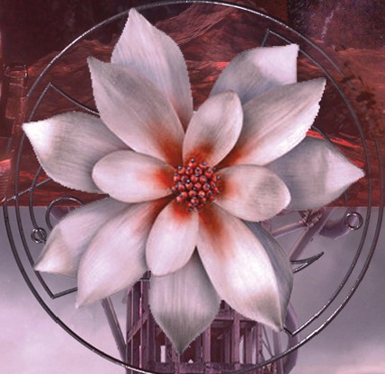
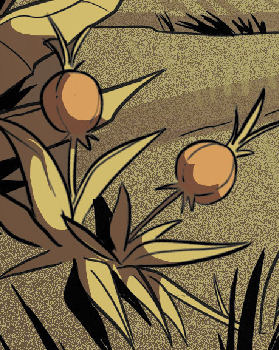
FLORA OF GALLIFREY
In Pre-Rassilite times much of Gallifrey’s plant life was green. In the modern era very little of Gallifrey's original biosphere survives. Gallifreyans have special incubators that allow them to accellerate a plant’s growth-cycle. The leaves of the plant life now come in the following colors
: red, green, blue, bronze,
silver,
and some are transparent. This change in coloration might be due to the second sun that Omega added to Gallifrey's system.
* There are Cadonwood Trees (with silver leaves),
and Ulanda Trees (silver leaved with tasty fruit, this might be the Gallifreyan tree that grow sweet yellow fruits), Maldor Trees,
Cerub Trees (with hallucinogenic truffle-flavored nuts),
Magentas (fruit tree),
and Oaks.
* Flowering plants include
Sarlain
(a yellow flower that resembles a Terran Daisy,
Daffodil or Rose),
Moonlight Blooms (silver petals, symbolizes peace and meditation), Flowers of Remembrance of the Lost Dead (Memento Mori - 6 pale yellow petals), Schlenk Blossoms (golden-green with a strong scent),
Gallifreyan Heather (which is harvested for its scent), Arkytior (a pearl-gray Gallifreyan rose), iridescent velvet-red Madevinia
Aridosa (small desert plants that have an incredibly rapid life cycle
and do mass bloomings after rain storms. Often used in science
experiments),
and red-petaled orchids.
Some flowers look like candle flames glowing in the dark, and some might be as tall as trees.
Others flowering plants found on Mt. Cadon are small and blue with long stamens that eat lizards.
* There are Trumpberries, Lushberries (probably edible),
Molten Rushes (with zinc hawthorns),
and Grass
(both in deep red and probably purple).
Biotrophic fungi include Feathergills, pogsquats, skullcaps, and Cardinal's collars.
*Other plants include ferns Hefzi Moss, Tristort (strong smelling plant found on the mountains of Southern Gallifrey), Weanskrike (another strong smelling plant found on the mountains of Southern Gallifrey), Henbane (a hallucinogenic used by Outsiders to make a painkiller). Onions, Grockel Root (a type of plant that is eaten and used to make alcohol, Outsider combine its oil with Henbane as a painkiller), Swamp-Mint (used to season food), and Knitbone (a slimy plant with healing properties). Given the planet's similarity to Alzarius, it is possible that something similar to Riverfuit (edible floating squash that are produced by underwater plants) might be found there.
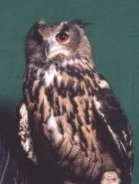
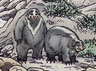
FAUNA OF GALLIFREY
Though they claim that the planet's ecosystems haven't been damaged by the Gallifreyan people, over the millions of years since the installation of the Eye of Harmony, very little of Gallifrey’s original biosphere survives and some of the surviving species, like the fledershrews, are in danger of dying out. While the outer ecology has been devastated, the Time Lords have used the Time Scoop to collect all the extinct species from its past and place them in zoos. For this reason, no animal ever became completely extinct. Some of the more fearsome ones were placed in the Death Zone. There are also Xeno-Zoos that hold alien creatures from other worlds. By the end of the Time War Gallifrey's biosphere had suffered near complete extinction and flies were one of the only species surviving in the outlands.
* Invertebrates: Beatitude Flies (beginning as maggots, they pupate into golden winged nocturnal insects that use nectar to create helium in their bellies, they are attracted to light and decay), Blossom Thieves, Butterflies, Bees, Dustworms, Gullet Grubs, Neversuch Beetles (hand-sized, with large antlers and mandibles, they have wings but can’t fly), Rassilonian Timefly (temporanius clepcydras, multidimensional with carcinogenic and artronic chiton, from the more fridged areas), Sandbeetles, Scissors Bugs, Flutterwings (3 meters by 25 meters, they never land, 5 races of flutterwing: wild endeavor, mandrigal, silver-band, blue crystal, perdition), Scrubblers, Snails, Waspbeatles, Water-Sligs, and web spinning insects, including spiders about an inch long. There are really nasty creatures that live beneath big stones. Given the planet's similarity to Alzarius, it is possible that Gallifrey has something similar to that planet's giant spiders (3 eyed spiders with morphogenic protein DNA venom that helps adapt other lifeforms to mistfall), that hatch out of riverfruit only when another planet draws the world into a cooler orbit.
* Marine life: Massive Leviathan (their leviahide is used leather), Singing Yaddlefish (will sing and can be eaten), Kittensharks (are hatched from eggs and presumably grow up to be Catsharks), and Axolotl Salamanders.
* Elapids: Taipan (a 10 meters long venomous snake), Venal Snakes, Bat-Snakes, and 20 meter long reptiles that resemble a brontosaurus with thick chitinous scales and serrated teeth. This might be the heavily armored and very destructive Dinosauria.
* Avians: Owls (the symbol of Rassilon), Flurry Birds, Trunkikes (game bird whose eggs are often eaten), Air Diamonds (which fly in the upper atmosphere), Snapping Wart Fowl (carnivorous bird), and various song birds. There are dinosaur-like, massive pterodactyl-like creatures (only found in zoos), Gargantosaurs (similar to a T-rex, only found in zoos) and a massive creature (twice the size of a hab-bloc) with 2 legs, 2 vestigial wings (with purple and white feathers) and 4 eyes. The Gallifreyan Marlot is purple and unique in all of time and space.
* Mammals: Gallifreyan children play with stuffed animals that look like teddy-bears with long ears. Plungbolls (thumbnail sized furry creatures, live in mountains, attach en masse to warm objects), Tafelshrews (edible rodent-like mammals), Fledershrews (bat-like, mushroom eaters, that are nearly extinct in the wild, but thrive inside TARDISes), Cobblemice (which sprout wings), Rovie Mice (live in fields, long lived if kept safe, sometimes used as pets, short memories), Moss-Rats, Vex (burrowing animal), Gallifreyan Womprats (1 meter long rats with fifteen legs), Pig-Rats (which live in the Drylands), Rabbits, Flubbles (small six-legged koalas), an animal similar to a rabbit, but rounder, tiny Ounce-Apes, Sealak (often eaten), Bear-Ass (a donkey like animal with bear-like qualities), Horse-Cats (live in the Drylands), Sagittary (a horse like creature), Elephants, Pig-Bears (which can be trained to be household pets, and can probably suffer from swine fever), wolf-like creatures (with very long snouts and black-and-white striped fur that are almost as big as adult humanoid), Broakir (live in foothills and are often hunted for food), Baanjxx (arboreal browser, eats cerub nuts), cows (morning Star cows or κοως which can have reddish-orange fur to help them blend into the environment, they like to play hide & seek), and probably walrus. The very timid Pazithi Bats are an invasive species from the moon of Pazithi Gallifreyan.
* Calculating Animals with a Tails (CATs): During the time of the Gallifreyan Empire, a solar engineer (possibly Omega himself) discovers that the square root of negative three is impossible to calculate. Gallifreyan biological engineers (possibly using the Loom of Rassilon's Mouse?) create a new sapient creature that has that knowledge breed into it. It is known as a Calculating Animal with a Tail (CAT). A CAT's instinctive precognitive powers allow it to sense what is possible and what is impossible. The CATs could thus prevent inventors and theorists from wasting their time for foolish projects. The CATs were sapient enough to talk. At the time, the creation of the CAT was the Gallifreyan Empire's greatest achievement - so much so, that they were each granted 13 lives via regeneration. In ancient times, it was to be traditional for every Lord President to have a Cat as an advisor. CATs spend most of their lives asleep. Despite this, Cats became revered on Gallifrey as the symbol of intelligence. In the modern era, many of the actions and contributions of the Other are attributed to Rassilon's CAT. Some Time Lords claim that there are CATs that can regenerate an infinite number of times. They remained purely domesticated until the Doctor and Ruath introduced house cats into outer Gallifrey's eco-system (probably at a point before The Infinity Doctors).
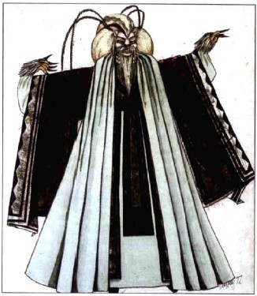
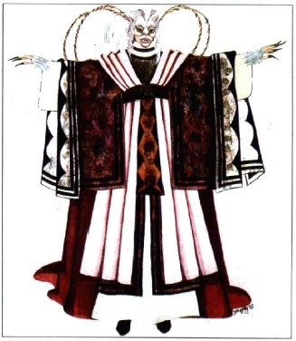
THE KILLER C.A.T.S OF GIN-SENG
The
ancestors of the Killer Cats were the Felinetta cat-people of the world of Feles. They are
born in litters, and the females were much smarter then that males. The
Cat-People had very good night vision and sense of smell, but they hate
water. They also had surprisingly stable biodata. Some are shapeshifters. The space-time jumping telepathic Kitlings were another race bred from the Felinetta by the Cheetah-people of the Cheetah Planet. Shortly after the Intuitive Revolution, the Warpsmiths of Phaidon, sent the Death (or Killer) Cats to wipe out the Time Lords. It was only thanks to Rassilon's creation of the Special Executive that the people of Gallifrey were spared.
In modern times, the precognitive, so-called, 'feral Killer Cats' live in the Gin-Seng Sector of southern Gallifrey. This sector covers some of the southern mountains near the House of Ixion (the southernmost chapterhouse). After a billion years, the Killer Cats are considered to be indigenous to Gallifrey. They have a highly refined culture which includese mercenaries (sometimes known as the Killers of the Dark) and oracles. Their entertainment includes lethal gladiatorial contests. These
cat-people despise the traditions of the Time Lords. Most departed
Gallifrey during the Morbius presidency because they had forseen the
coming Time War.
End Time: The Death Particle
After the Time Lords had removed Gallifrey from the pocket dimension, the Master hacked the Matrix. He stumbles on the secret of the Timeless Child and, enraged, he burned the Citadel and killed all the Gallifreyans. Not long after that the Master began turning the corpses into CyberMasters. The human Ko Sharmus triggers the Death Particle to destroy this new cyber-race. It kills every organic cellular life-form on the planet Gallifrey.